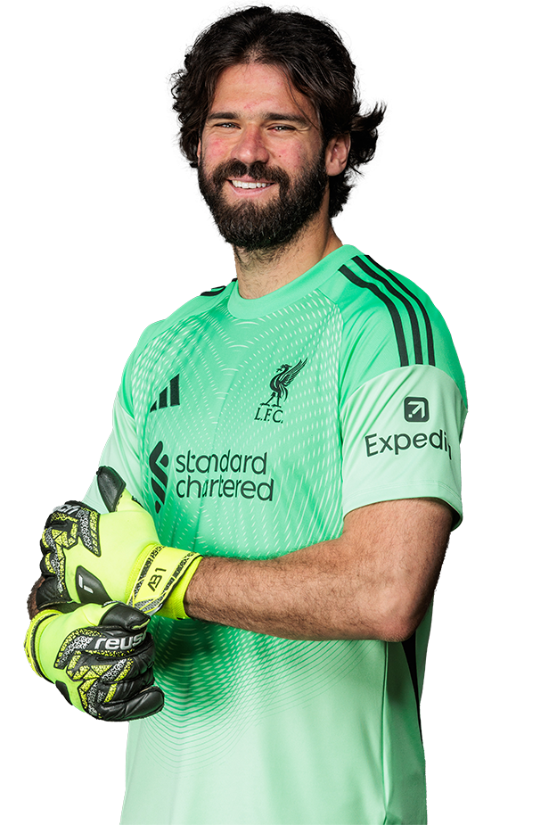

THE LIVERPOOL F.C.
Liverpool FC is one of England’s most historic football clubs, based at the iconic Anfield stadium in Liverpool. Founded in 1892, the Reds have built a legacy of domestic and international success, with a passionate global fan-base and the famous anthem “You ’ll Never Walk Alone”. Heading into the 2025-26 season, Liverpool are the defending Premier League champions, having lifted the title in the previous campaign. Wikipedia Under new management from Dutch coach Arne Slot, they’ve moved into a transition phase — blending youthful signings and experience, while coping with the departure of key figures and some significant changes. Among the major incoming players is the record-breaking signing of Alexander Isak, intended to bolster their attacking firepower. The season has had its ups and downs: while Liverpool remain serious contenders, they’ve also faced challenges with consistency and key injuries — adding drama to their title defence. In short: Liverpool enter 2025-26 with high ambitions, rich history, and a squad in flux — aiming to repeat their success while proving they can sustain it in a new eraLiverpool FC is one of England’s most historic football clubs, based at the iconic Anfield stadium in Liverpool. Founded in 1892, the Reds have built a legacy of domestic and international success, with a passionate global fan-base and the famous anthem “You ’ll Never Walk Alone”.
